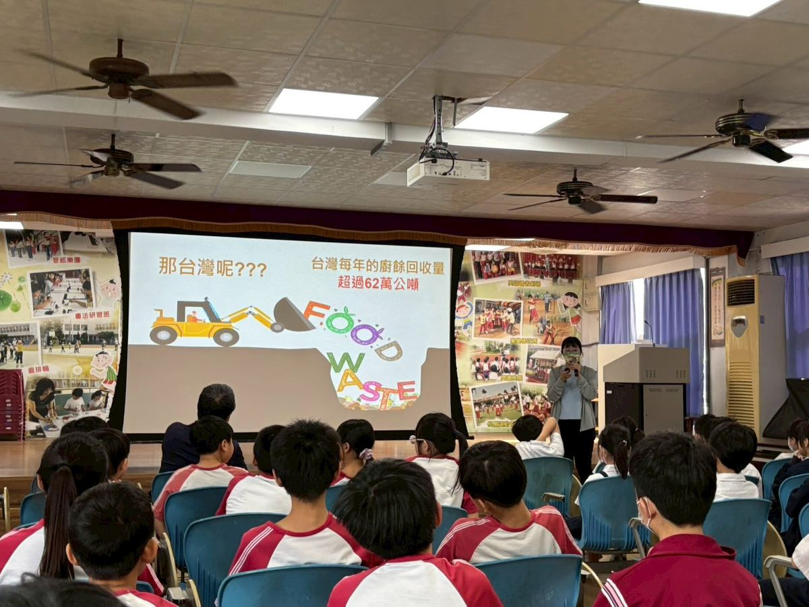

Why Earth Day at a small school 為什麼小學校要過地球日
April 22 is World Earth Day. The temptation, when planning a school activity around it, is to do something visual: pick up trash on campus, plant a tree, hang a poster. None of those are wrong. But this year, Hualong tried a quieter approach: focus on one thing every child does three times a day — eat — and ask whether that ordinary act could be done a little more thoughtfully.
The school invited Liu Hsuan-hsiu, a nutritionist from Yumei Biotech, to lead a whole-school assembly on the theme "Cherish Food, Love Earth." The goal wasn't to make every child a vegetarian or to scare anyone with climate statistics. It was simpler: help children see the connection between the bowl in front of them and the planet underneath.
4 月 22 日是世界地球日。學校在規劃這天的活動時，最容易想到的是看得見的事：校園撿垃圾、種樹、貼海報。這些都沒有錯。但今年華龍試了比較安靜的做法：聚焦在每個孩子每天做三次的事——吃飯——並問問看，這個平凡的動作能不能做得更有意識一點。
學校邀請玉美生技劉宣秀營養師蒞校，主持以「惜食愛地球」為主題的全校宣講。目標不是把每個孩子都變成素食者，也不是用氣候統計嚇人。目標更簡單：幫孩子看見眼前那一碗飯，和腳下那塊土地之間的連結。
What the nutritionist actually said 營養師講了什麼
Three things, mostly. First, that roughly a third of all food produced globally never gets eaten — it's wasted, in fields, in supermarkets, in homes. Second, that the energy and water it took to grow that wasted food is also wasted, and shows up in the climate as carbon emissions. Third, that the smallest household act — finishing what's on your plate, planning the week's groceries before you shop, treating leftovers as ingredients — quietly bends the global numbers.
She delivered all of this without lecturing. The auditorium watched footage of a Taiwanese family's weekly food waste, looked at a slide showing what 800 grams of wasted bread looks like, and tried to guess how many liters of water it takes to grow one cucumber. (The answer surprised everyone.)
大概講了三件事。第一，全球生產的食物，大約有三分之一最終沒有被吃掉——它們在農田、超市、家裡被浪費了。第二，這些被浪費食物所消耗的能源與水，也跟著被浪費，最終在氣候上以碳排放的形式出現。第三，最小的家庭行動——把盤子裡的吃完、買菜前先計劃整週的菜單、把剩菜當作食材重新利用——會悄悄地改變那些全球的大數字。
她沒有用說教的方式講。禮堂看著一個台灣家庭一週食物浪費的影片、看一張顯示 800 克剩麵包長什麼樣子的投影片，並猜「種一根小黃瓜要用多少公升的水？」——答案讓大家都嚇了一跳。
You are not just a bystander. You are someone who can change things. That makes you an Earth superhero.你不是旁觀者，而是有能力改變現狀的行動者——這就讓你成為地球超人。
Two SDGs the lesson connects to 這堂課對接的兩個 SDG
The United Nations' Sustainable Development Goals (SDGs) are 17 targets the world has set for 2030. Hualong's Earth Day assembly didn't list them on a slide — but two of them sat quietly underneath the entire lesson:
Responsible Consumption & Production 負責任的消費與生產
Reduce food waste at retail and consumer level by half by 2030. Every cleaned plate is a small vote for this target.
Climate Action 氣候行動
Take urgent action to combat climate change. Cutting food waste alone could reduce global greenhouse-gas emissions meaningfully.
聯合國 17 項永續發展目標（SDGs）是世界給自己訂下、要在 2030 年達成的目標。華龍地球日宣講沒有把它們列在投影片上——但其中兩項，安靜地撐起了整堂課：SDG 12（負責任消費與生產）和 SDG 13（氣候行動）。
Why this matters at Hualong specifically 為什麼這件事對華龍特別重要
Hualong is a Sailing-Flag school for outdoor and sustainable learning. That's not a slogan; it's a curriculum frame. Earth Day at Hualong isn't a one-off — it sits inside a longer conversation that includes our middle-graders walking out to a soybean farm in May, and our cafeteria's quiet ongoing effort to source from local Xiushui producers.
One assembly will not save the planet. But forty-five minutes of helping a child see her dinner as a small climate decision — that is the kind of curriculum we want to keep building. Small school. Big classroom.
華龍是揚帆學校。這不是口號，是課程架構。地球日宣講不是一次性的活動——它放在一個更長的對話裡：包括五月中高年級走進北斗黃豆田的戶外課程，也包括營養午餐安靜持續地向秀水在地小農採購的努力。
一次宣講救不了地球。但四十五分鐘，幫一個孩子把自己的晚餐看成一個小小的氣候選擇——這是我們想要繼續建構的課程。小學校。大教室。
From the assembly 活動現場

- About this story · 故事來源
- Adapted from Hualong Elementary's official Facebook page 華龍愛閱點播站, World Earth Day post: 「世界地球日～惜食愛地球～從你我開始」
- Speaker · 講師
- Liu Hsuan-hsiu, registered nutritionist · 玉美生技股份有限公司劉宣秀營養師
- Frameworks · 框架對接
- UN Sustainable Development Goal 12 · Goal 13 · World Earth Day (April 22)